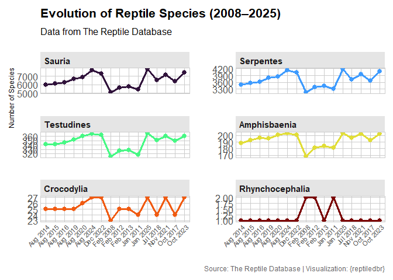
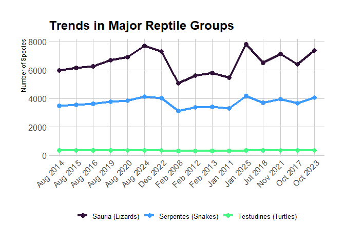

Overview
reptiledbr is an R package that provides programmatic access to data from The Reptile Database, a comprehensive and curated source of taxonomic information on all living reptiles. This includes snakes, lizards, turtles, tuataras, amphisbaenians, and crocodiles—over 12,000 species and more than 2,800 subspecies.
The goal of reptiledbr is to facilitate access to reptile taxonomy, nomenclature, distribution, and associated scientific literature in a reproducible and efficient way for researchers, ecologists, educators, and biodiversity data users.
Installation
You can install the development version of reptiledbr from GitHub with:
# install.packages("pak")
pak::pak("PaulESantos/reptiledbr")Features
Query species by scientific name
Retrieve synonyms, type localities, and distributions
Access bibliographic references for species descriptions
Work online (direct server queries) or offline (local database)
Fully integrated with the R environment for analysis
Data Source
The package uses data from The Reptile Database, an open and community-driven resource curated by herpetologists and volunteers around the world. It focuses on taxonomic data including:
Scientific names and synonyms
Type specimens and distribution
Original literature references
The database was initiated by Peter Uetz in 1995 and is currently curated by a volunteer team. For more information, visit: www.reptile-database.org
Note: This package is not officially affiliated with The Reptile Database. It provides an independent R interface to facilitate access to public data.

Usage
Online Access
Query data directly from The Reptile Database server:
library(reptiledbr)
#> Welcome to reptiledbr (0.0.1)
#> This package provides tools to access and query data from the Reptile Database:
#> https://reptile-database.reptarium.cz/
#> Type ?reptiledbr to get started or visit the documentation for examples and guidance.
# Get detailed information for a specific species
reptiledb <- reptiledbr::get_reptiledb_data("Anolis carolinensis", quiet = FALSE)
#> Starting search for 1 species...
#> Maximum wait time per request: 10 seconds
#> ------------------------------------------------------------------------
#> Processing: Anolis carolinensis
#> SUCCESS: Data found for Anolis carolinensis
#> ------------------------------------------------------------------------
#> Search summary:
#> Species found with data: 1
#> Species not found: 0
#> Total errors: 0
#> ------------------------------------------------------------------------
# Format the results in a user-friendly way
all_attributes <- reptiledb |>
reptiledbr::format_all_attributes()
#> Starting to format all attributes...
#> Attribute formatting successfully completed.
all_attributes$distribution
#> # A tibble: 11 × 4
#> input_name genus species distribution
#> <chr> <chr> <chr> <chr>
#> 1 Anolis carolinensis Anolis carolinensis USA (E Texas, SE Oklahoma, S Arkansa…
#> 2 Anolis carolinensis Anolis carolinensis Bahamas, Grand Cayman Islands (HR 33…
#> 3 Anolis carolinensis Anolis carolinensis Introduced to Hawaii (fide MCKEOWN 1…
#> 4 Anolis carolinensis Anolis carolinensis Introduced to Japan (Chichizima Is. …
#> 5 Anolis carolinensis Anolis carolinensis Introduced to Micronesia and Guam (G…
#> 6 Anolis carolinensis Anolis carolinensis May have been introduced to Tenerife…
#> 7 Anolis carolinensis Anolis carolinensis Introduced to Northern Mariana Islan…
#> 8 Anolis carolinensis Anolis carolinensis Introduced to Mexico (Nuevo León, Lu…
#> 9 Anolis carolinensis Anolis carolinensis Introduced to California fide Hansen…
#> 10 Anolis carolinensis Anolis carolinensis baccatus: Mexico; Type locality: Mex…
#> 11 Anolis carolinensis Anolis carolinensis seminolus: USA (Florida); Type local…
all_attributes$common_names
#> # A tibble: 3 × 4
#> input_name genus species common_name
#> <chr> <chr> <chr> <chr>
#> 1 Anolis carolinensis Anolis carolinensis E: North American Green Anole, Green …
#> 2 Anolis carolinensis Anolis carolinensis S: Anolis Verde
#> 3 Anolis carolinensis Anolis carolinensis G: RotkehlanolisLocal/Offline Access
Perform taxonomic verification without internet connection:
library(reptiledbr)
# Define a vector of species names to verify
species_names <- c(
"Lachesis muta",
"Python bivittatus",
"Crotalus atrox",
"Lachesis mutta" # Intentional typo
)
# Exact search (strict matching)
reptiledbr::reptiledbr_exact(species_names)
#> # A tibble: 4 × 10
#> id input_name found species_match order family genus epithet author message
#> <int> <chr> <lgl> <chr> <fct> <fct> <fct> <fct> <chr> <chr>
#> 1 1 Lachesis … TRUE Lachesis muta Serp… Viper… Lach… muta Linna… No sub…
#> 2 2 Python bi… TRUE Python bivit… Serp… Pytho… Pyth… bivitt… Kuhl … Specie…
#> 3 3 Crotalus … TRUE Crotalus atr… Serp… Viper… Crot… atrox Baird… No sub…
#> 4 4 Lachesis … FALSE <NA> <NA> <NA> <NA> <NA> <NA> Specie…
# Partial/fuzzy search (finds matches despite typos)
reptiledbr::reptiledbr_partial(species_names)
#> # A tibble: 4 × 11
#> id input_name found species_match order family genus epithet author
#> <int> <chr> <lgl> <chr> <fct> <fct> <fct> <fct> <chr>
#> 1 1 Lachesis muta TRUE Lachesis muta Serp… Viper… Lach… muta Linna…
#> 2 2 Python bivittatus TRUE Python bivitt… Serp… Pytho… Pyth… bivitt… Kuhl …
#> 3 3 Crotalus atrox TRUE Crotalus atrox Serp… Viper… Crot… atrox Baird…
#> 4 4 Lachesis mutta TRUE Lachesis muta Serp… Viper… Lach… muta Linna…
#> # ℹ 2 more variables: fuzzy_match <lgl>, message <chr>
# Flexible search with additional options
reptiledbr::search_reptiledbr(species_names, use_fuzzy = TRUE)
#> # A tibble: 4 × 12
#> id input_name found species_match order family genus epithet author message
#> <int> <chr> <lgl> <chr> <fct> <fct> <fct> <fct> <chr> <chr>
#> 1 1 Lachesis … TRUE Lachesis muta Serp… Viper… Lach… muta Linna… No sub…
#> 2 2 Python bi… TRUE Python bivit… Serp… Pytho… Pyth… bivitt… Kuhl … Specie…
#> 3 3 Crotalus … TRUE Crotalus atr… Serp… Viper… Crot… atrox Baird… No sub…
#> 4 4 Lachesis … TRUE Lachesis muta Serp… Viper… Lach… muta Linna… No sub…
#> # ℹ 2 more variables: match_type <chr>, fuzzy_match <lgl>
# List subspecies for specific species
reptiledbr::search_reptiledbr(c("Anolis barahonae")) |>
reptiledbr::list_subspecies_reptiledbr()
#> # A tibble: 4 × 3
#> species subspecies_name author
#> <chr> <chr> <chr>
#> 1 Anolis barahonae Anolis barahonae barahonae Williams 1962
#> 2 Anolis barahonae Anolis barahonae albocellatus Schwartz 1974
#> 3 Anolis barahonae Anolis barahonae ininquinatus Cullom & Schwartz 1980
#> 4 Anolis barahonae Anolis barahonae mulitus Cullom & Schwartz 1980Citing the Data
Please cite the original Reptile Database if you use this package in published work:
Uetz, P., Freed, P., & Hošek, J. (eds.) (2021). The Reptile Database. Retrieved from http://www.reptile-database.org
Contributing
Contributions, bug reports, and feature requests are welcome! Please use the issue tracker to report problems or suggest improvements.